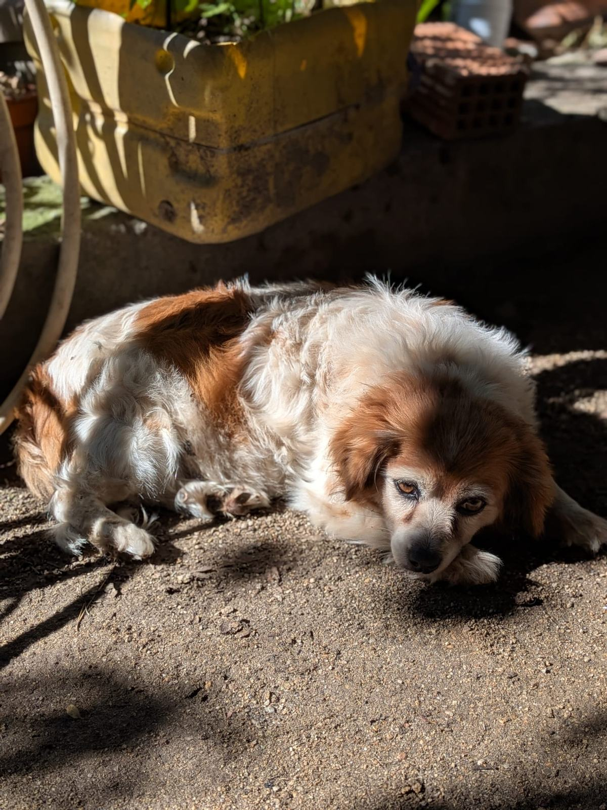
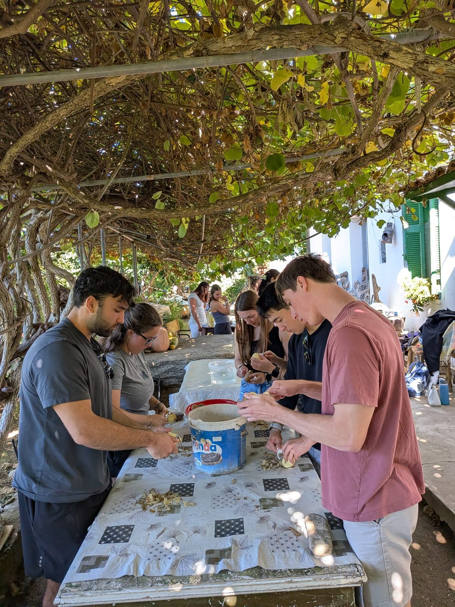
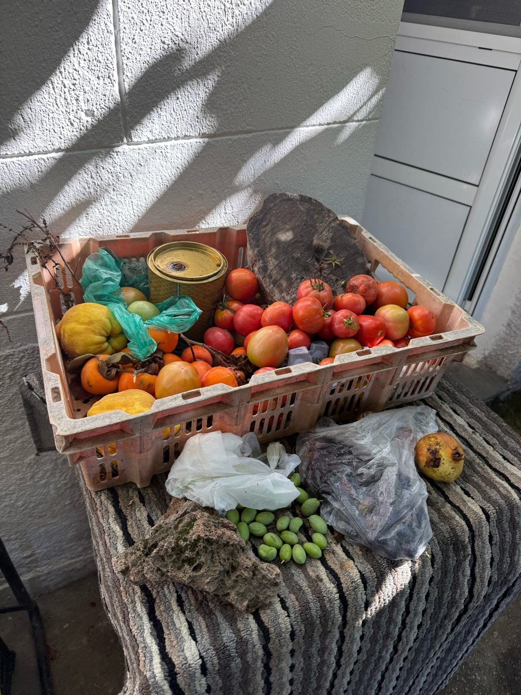
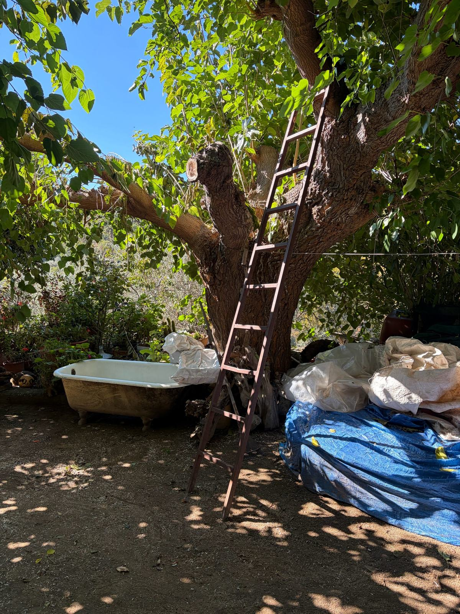
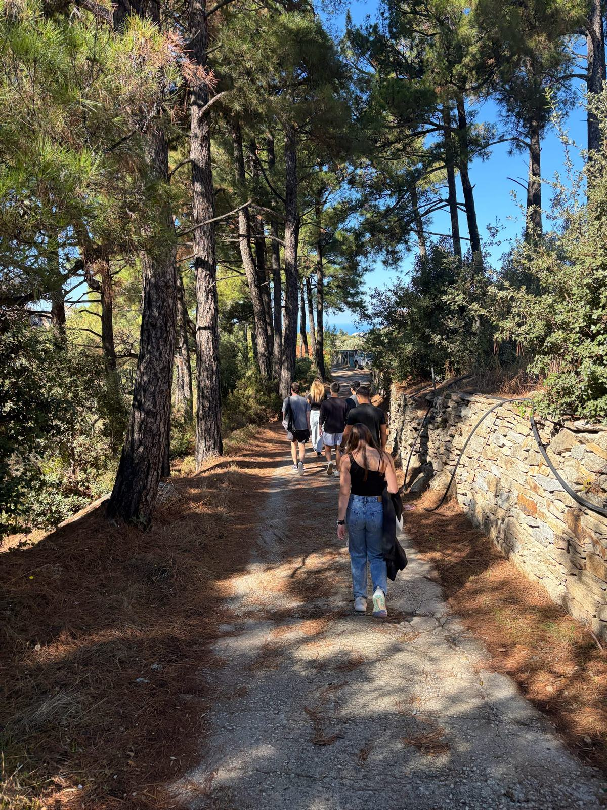

More Than a Meal
Community isn’t always something we have to make extra time for. Sometimes, it’s already part of what we’re doing.
One of my favorite experiences in Ikaria was visiting a local woman’s home and learning how to prepare a traditional meal. Rather than simply being served food, we spent much of the afternoon watching her cook and helping with different parts of the preparation.

We were surrounded by reminders of how closely food was connected to everyday life on the island. Our host had her own goats and chickens, kiwi vines growing overhead on the outdoor patio, and ingredients such as homemade cheese, dough, and olive oil. While she did most of the cooking, we helped roll meatballs, peel vegetables, and prepare the cabbage rolls by wrapping the filling in cabbage leaves. Eventually, we sat down together to enjoy the meal.
Another detail I found amusing was learning about the wine-making competitions between neighbors. Apparently, people could get pretty competitive about whose homemade wine was best, to the point that they kept their recipes secret from one another. I thought it was funny that, despite how willing everyone was to share their food and traditions with us, their wine recipes were apparently off-limits. It was a small but memorable example of how social life extended into activities like making wine.
What stood out to me was how much time we spent on something I would normally consider a relatively simple part of my day. At home, I often think of meals in terms of convenience, especially when I’m busy with school. Cooking and eating are usually things I try to fit into my schedule. In Ikaria, however, preparing the meal was just as much a part of the experience as eating it.
I also remember our host sharing advice about appreciating what we already have rather than constantly wanting more. This was something I continued thinking about throughout the trip, especially because it challenged how easily I become focused on whatever comes next.
These experiences made me think about how community doesn’t always require a special occasion. Sometimes, it can develop through ordinary activities like preparing food and sharing a meal.
Community isn’t always something we have to make extra time for. Sometimes, it’s already part of what we’re doing.
Photographs from the experiences and people behind this reflection.







